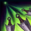

THE ROGUE ASSASSIN
AKALI
Abandoning the Kinkou Order and her title of the Fist of Shadow, Akali now strikes alone, ready to be the deadly weapon her people need. Though she holds onto all she learned from her master Shen, she has pledged to defend Ionia from its enemies, one kill at a time. Akali may strike in silence, but her message will be heard loud and clear: fear the assassin with no master.
ABILITIES

PASSIVE
ASSASSIN'S MARK
Dealing spell damage to a champion creates a ring of energy around them. Exiting that ring empowers Akali's next Attack with bonus range and damage.